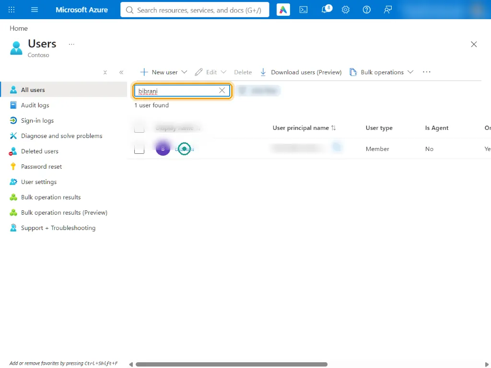
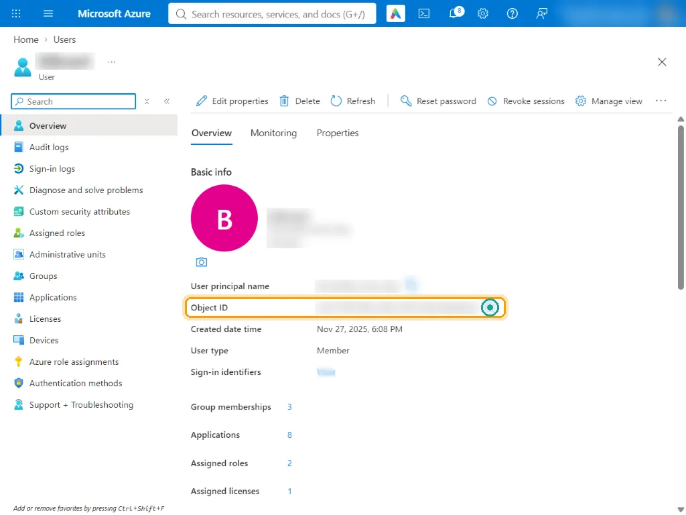
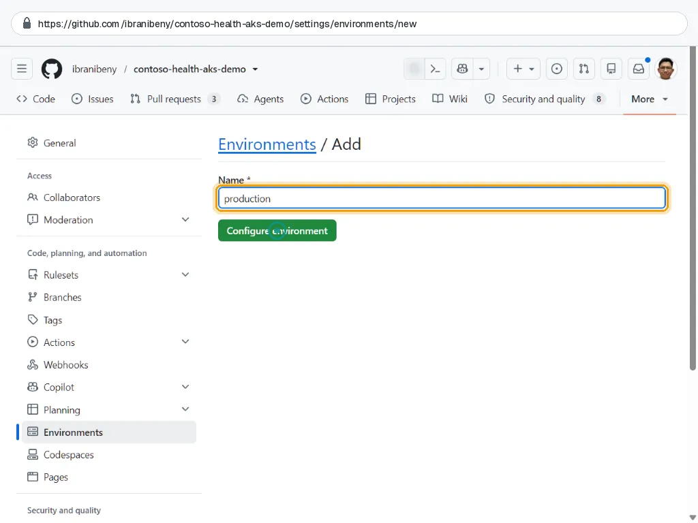
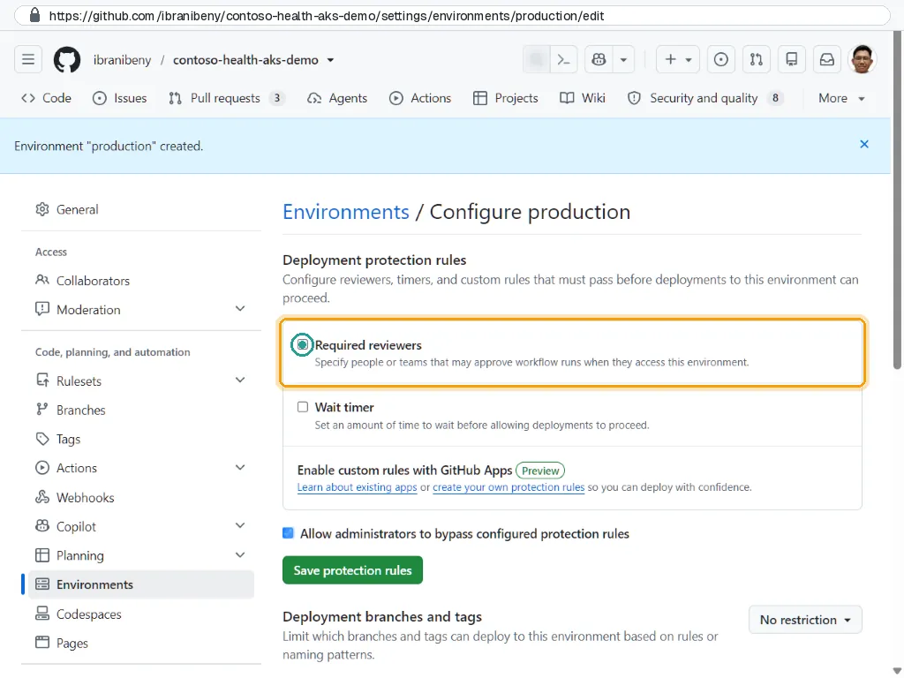

Step 4 of 10
Connect GitHub to Azure
Give the repository the identifiers it needs, an approval gate in front of production, and a ruleset that sends every change to main through a pull request with green checks.
What you will do#
- Find your own Object ID so the template can grant you access to the cluster.
- Create the
productionenvironment with yourself as required reviewer. - Add the repository variables the workflows read.
- Protect
mainwith a branch ruleset: pull request, required status checks, no force pushes.
Find your user Object ID#
Microsoft Entra ID, Users: search for the account you sign in to the portal with, then open it.

s4-01 Copy the Object ID. It becomes the ADMIN_PRINCIPAL_ID variable, so Bicep grants you AKS RBAC Cluster Admin for the portal's Kubernetes views.

s4-02
Create the production environment#
GitHub repository, Settings, Environments, New environment. Name it production: the deploy jobs reference this environment.

s4-03 Environment production is created. Under Deployment protection rules, tick Required reviewers.

s4-04 In the reviewer search box, find your GitHub user and add it. Leave Prevent self-review unticked: in this one-person demo you approve your own deployments. In a team, tick it.
Untick Allow administrators to bypass configured protection rules so the gate applies to everyone, then select Save protection rules.
Under Deployment branches and tags, choose Selected branches and tags, Add deployment branch or tag rule, enter
mainand select Add rule.
Add repository variables#
Open Settings, Secrets and variables, Actions, then the Variables tab.
Select New repository variable, enter the name and value, and select Add variable. Repeat for each row in the table below.
| Variable | Value | |
|---|---|---|
AZURE_CLIENT_ID | Client ID of id-github-contoso-health (step 3) | Required |
AZURE_TENANT_ID | Directory (tenant) ID: Microsoft Entra ID, Overview | Required |
AZURE_SUBSCRIPTION_ID | Subscription ID: Subscriptions, your subscription | Required |
AZURE_PRINCIPAL_ID | Object (principal) ID of id-github-contoso-health; Bicep grants it AKS RBAC Cluster Admin so the pipeline can run kubectl | Required |
ADMIN_PRINCIPAL_ID | Your user's Object ID (Entra ID, Users); Bicep grants you AKS RBAC Cluster Admin for the portal's Kubernetes views | Recommended |
AZURE_RESOURCE_GROUP | Defaults to rg-contoso-health-aks | Optional |
AZURE_LOCATION | Defaults to indonesiacentral (used for the public DNS name) | Optional |
DNS_LABEL | Defaults to contoso-health-<owner>; the app URL becomes http://<label>.indonesiacentral.cloudapp.azure.com | Optional |
AKS_NODE_VM_SIZE | Defaults to Standard_D4ds_v5 | Optional |
ALERT_EMAIL | Creates an action group that e-mails alerts. Leave it unset in a public repository: workflow logs and the deployment record are visible. | Optional |
None of these values is a credential: a client ID or a subscription ID cannot sign in to anything without a token that only GitHub can issue to this repository. Variables keep them readable in the settings. azure/login still masks the client ID in logs by default.
Protect main with a ruleset#
Open Settings, Rules, Rulesets, New ruleset, New branch ruleset.
Name it
protect-main, set Enforcement status to Active, and under Target branches select Add target, Include default branch.Keep Restrict deletions and Block force pushes ticked.
Tick Require a pull request before merging; set required approvals to 0 for a one-person demo, and tick Require conversation resolution before merging.
Tick Require status checks to pass, select Add checks and add the checks listed below.
Optional: tick Automatically request Copilot code review if your plan includes Copilot code review.
Select Create.
Required status checks (they appear in the picker after CI has run at least once):
Test (membership-api)
Test (bed-api)
Test (portal)
Container build (membership-api)
Container build (bed-api)
Container build (portal)
Validate Bicep (IaC)
Validate Kubernetes manifests
Analyze (javascript-typescript)
Analyze (actions)Check your work#
productionshows 1 protection rule (required reviewer) and the branch policymain.- Five or more repository variables exist, including the four required ones.
- Rulesets lists
protect-mainas Active. A direct push tomainis now rejected.
How it works#
One environment, two jobs. Both deploy jobs (Deploy to Azure and Deploy to AKS) declare environment: production. GitHub pauses them until a reviewer approves, and only then issues an OIDC token whose subject ends with :environment:production, the only subject the identity trusts for deployments. The approval gate and the Azure trust are the same control.
Rulesets replace classic branch protection: they can be layered, show enforcement status, and can be applied across repositories by an organization. Required status checks keep untested code out of main; because deployments run only from main, nothing reaches the cluster without passing CI.